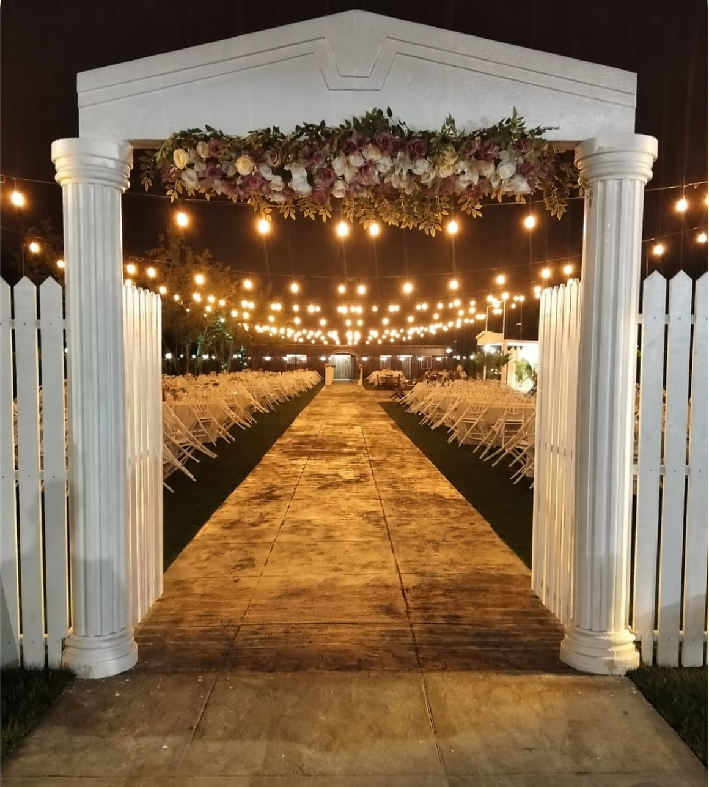
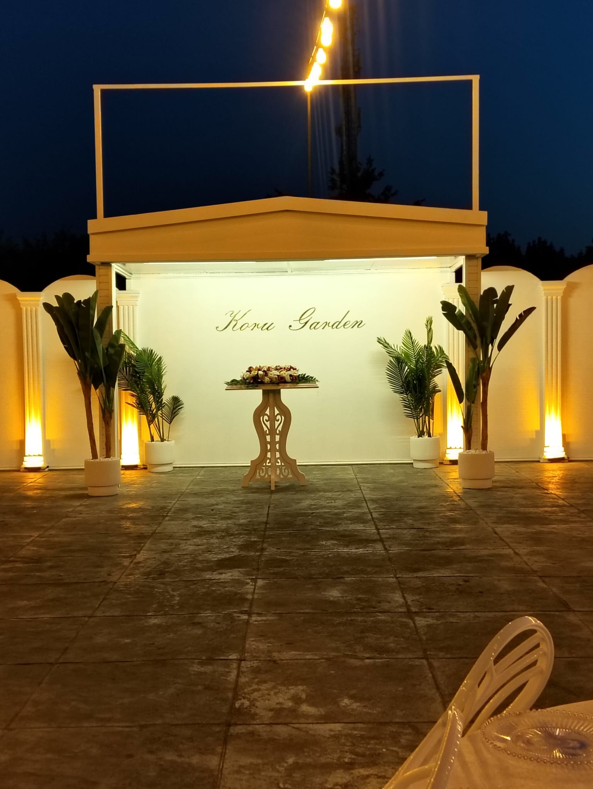
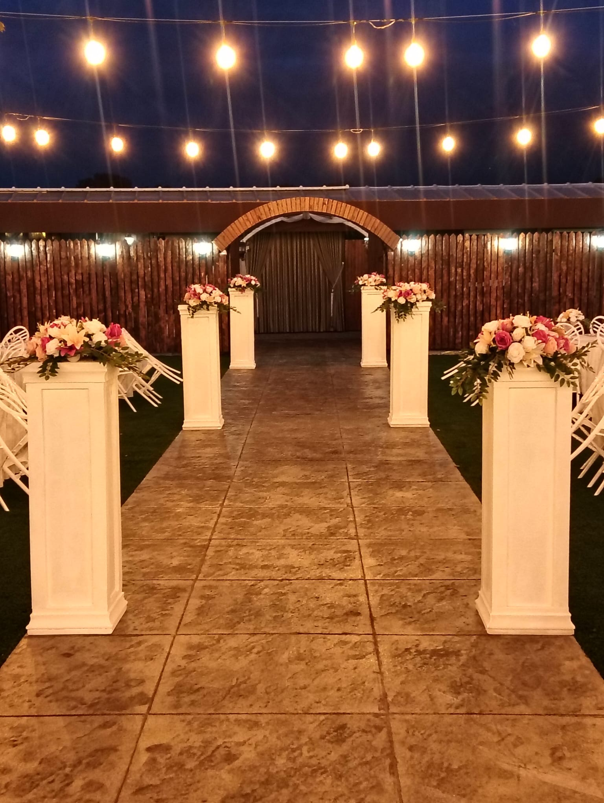
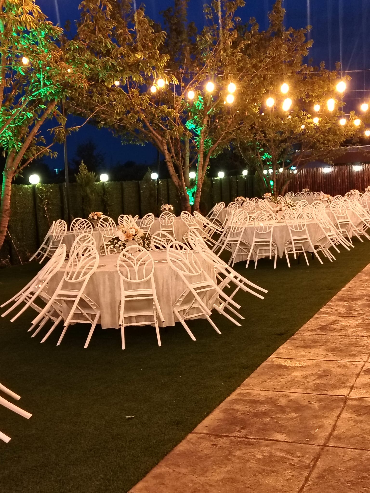
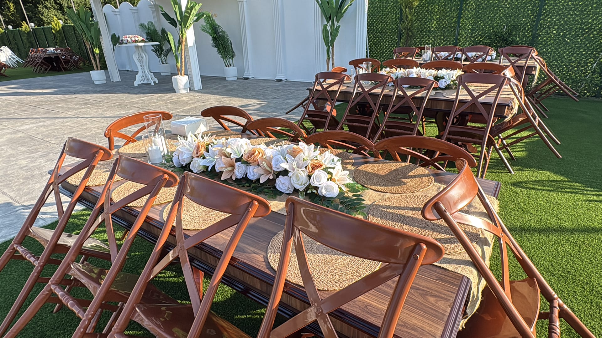
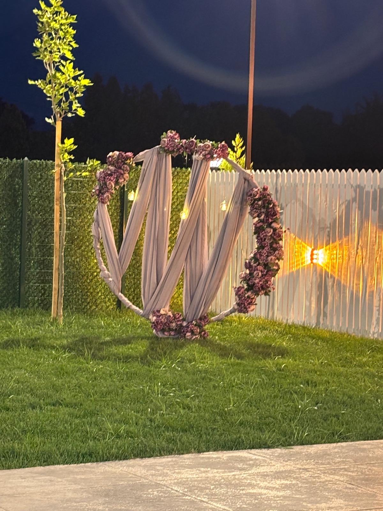
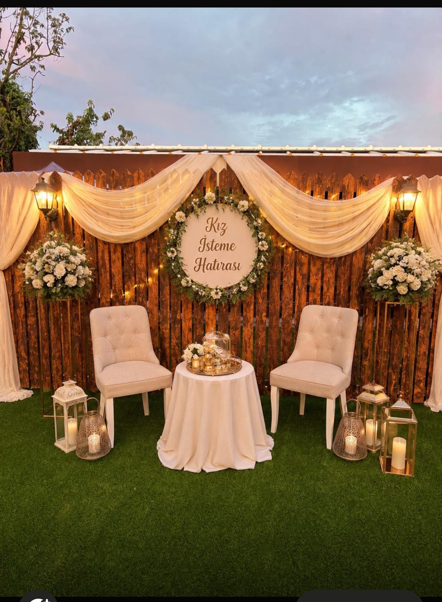
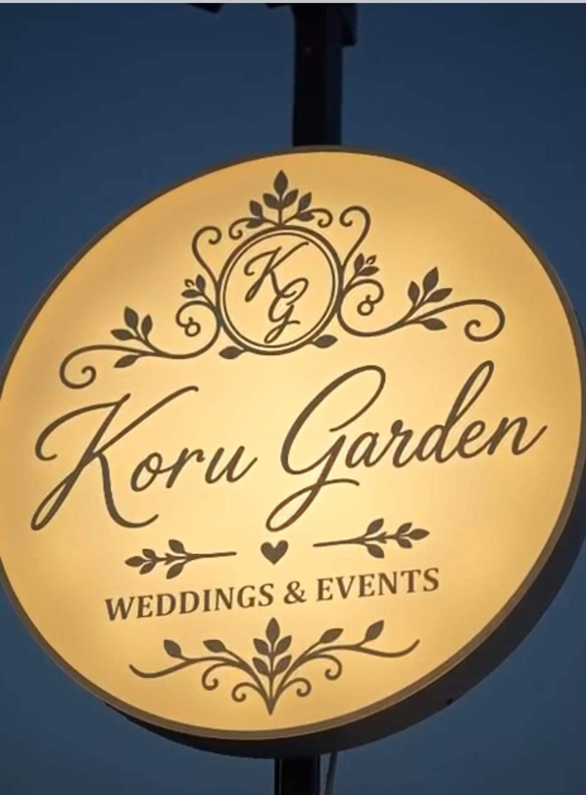

300 - 900 kişilik geniş kapasitemiz, masalsı ampul aydınlatmalarımız ve büyüleyici kır atmosferimizle en özel gününüze ev sahipliği yapıyoruz.








Geniş aileler ve prestijli davetler için tasarlanmış ferah, doğayla iç içe açık hava organizasyon alanı.
Çiftlerimizin heyecanlı anlarına konforla hazırlanabileceği, doğa içinde özel tasarlanmış dinlenme bahçesi.
Kız isteme hatırası, ahşap konseptler ve dev anı aynaları ile ölümsüzleşecek en güzel fotoğraf alanları.
Sıcak ampul aydınlatmaları ve ağaç ışıklandırmalarıyla gecenize romantik ve büyüleyici bir dokunuş.
En son teknoloji ses, canlı müzik altyapısı ve sahne aydınlatma sistemleri ile kesintisiz eğlence.
Davetlilerinizin ulaşım ve park stresi yaşamadan konforla giriş yapabileceği geniş otopark alanı.
Bursa Osmangazi Çeltikköy’de doğayla iç içe, şık ve samimi atmosferiyle hizmet veren Koru Garden, hayatınızın en özel günlerine ev sahipliği yapıyor. Düğün, nişan, kına gecesi, söz, kız isteme, sünnet ve kurumsal organizasyonlar için 300'den 900 kişiye kadar farklı davet alanı seçenekleri sunuyoruz.
Doğal ahşap ve modern beyaz napolyon masa konseptlerimiz, masalsı ampul aydınlatmalarımız ve alanında uzman ekibimizle Bursa'da kır düğünü denince akla gelen prestijli adres olmanın gururunu yaşıyoruz.
Bizimle İletişime GeçinÇeltikköy / Osmangazi
Açık Hava & DoğaDoğal ahşap ziyafet masaları, jüt supla detayları ve canlı çiçek süslemeleriyle rustik ve sıcak bir davet atmosferi.
Şık beyaz napolyon sandalyeler, fildişi örtüler ve büyüleyici sarı ışıklar altında ışıltılı ve modern bir şıklık.